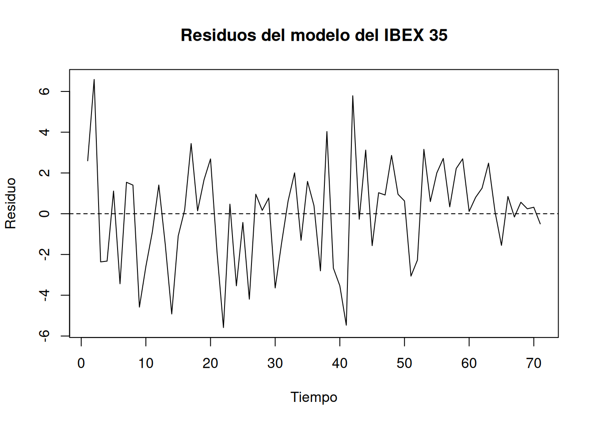
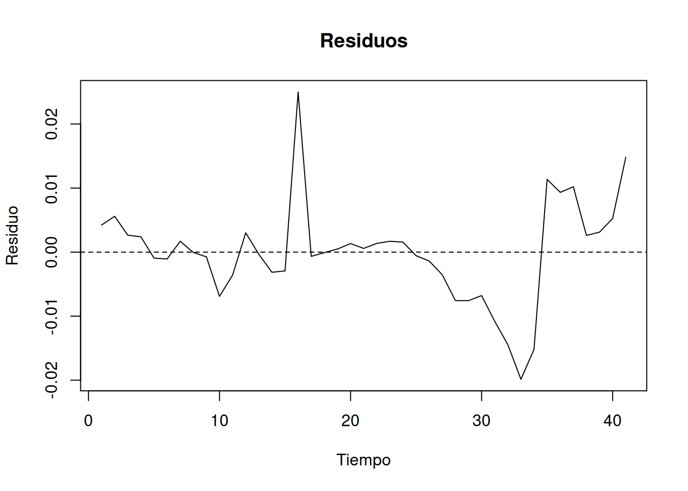
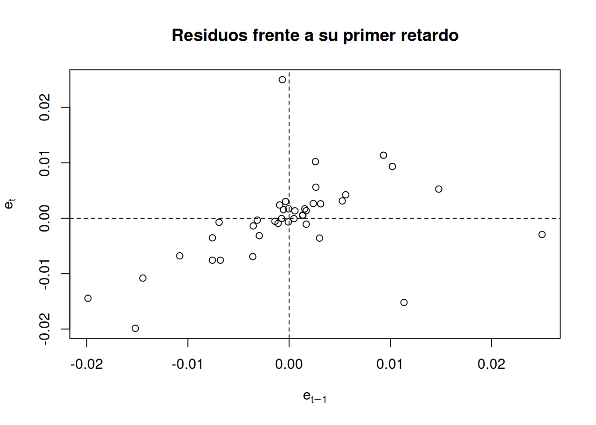
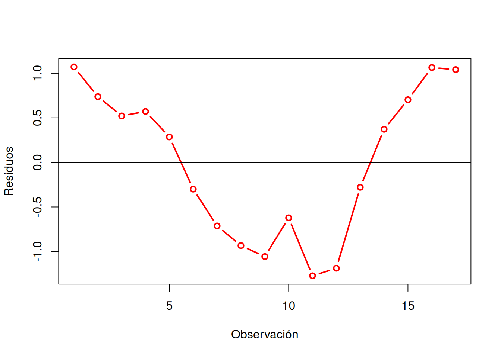
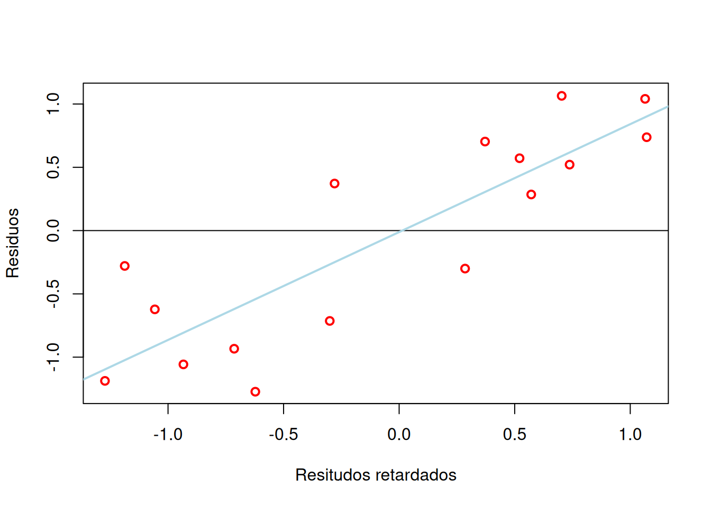

Código
plot(
residuos,
type = "l",
main = "Residuos del modelo del IBEX 35",
xlab = "Tiempo",
ylab = "Residuo"
)
abline(h = 0, lty = 2)
Al finalizar este tema, el estudiante será capaz de:
En el modelo lineal general,
\[ \mathbf{y} = \mathbf{X}\boldsymbol{\beta}+\mathbf{u}, \]
uno de los supuestos clásicos establece que las perturbaciones aleatorias de distintas observaciones no están correlacionadas entre sí. En concreto, suponemos que \(Var(\mathbf{u})=\sigma^2\mathbf{I}\) que implica tres condiciones:
Las perturbaciones tienen media cero: \(E(u_t)=0\)
Las perturbaciones presentan una varianza constante \(Var(u_t)=\sigma^2\)
Las perturbaciones correspondientes a diferentes observaciones están incorrelacionadas: \(Cov(u_t,u_s)=0\qquad t\neq s.\)
La tercera condición es especialmente importante cuando trabajamos con datos de series temporales, donde las observaciones están ordenadas cronológicamente.
Existe autocorrelación cuando las perturbaciones correspondientes a distintos momentos del tiempo están correlacionadas: \(Cov(u_t,u_{t-k})\neq 0,\qquad k>0.\)
Por tanto, mientras que en la heteroscedasticidad estudiábamos una modificación de la varianza de las perturbaciones, en la autocorrelación estudiamos una modificación de las covarianzas entre perturbaciones de distintos períodos.
En presencia de autocorrelación podemos escribir:
\[ Var(\mathbf{u})=\sigma^2\mathbf{\Omega}, \]
donde \(\mathbf{\Omega}\) recoge la estructura de covarianzas entre las perturbaciones.
Por ejemplo:
\[ Var(\mathbf{u})= \begin{pmatrix} \sigma^2 & \sigma_{12} & \cdots & \sigma_{1n}\\ \sigma_{21} & \sigma^2 & \cdots & \sigma_{2n}\\ \vdots & \vdots & \ddots & \vdots\\ \sigma_{n1} & \sigma_{n2} & \cdots & \sigma^2 \end{pmatrix}. \]
La diagonal principal recoge las varianzas de las perturbaciones, mientras que los elementos situados fuera de la diagonal representan sus covarianzas.
En ausencia de autocorrelación \(\sigma_{ts}=0\qquad t\neq s.\)
En presencia de autocorrelación, algunas de estas covarianzas serán diferentes de cero.
El problema es que una matriz completamente general requeriría estimar un número muy elevado de parámetros. Por ello, al igual que ocurre con la heteroscedasticidad, es necesario especificar una estructura concreta para las covarianzas. La estructura más sencilla que estudiaremos será la correspondiente a un proceso autorregresivo de primer orden, AR(1) que consiste en que las perturbaciones de un momento temporal dependen del momento temporal anterior.
La autocorrelación aparece fundamentalmente en modelos estimados con datos de series temporales. Sin embargo, su origen puede encontrarse tanto en la propia naturaleza del fenómeno como en una especificación incorrecta del modelo.
Ejemplo: Supongamos que analizamos la evolución del IBEX 35 y omitimos factores como la incertidumbre internacional, la evolución de los tipos de interés o las expectativas de los inversores. Aunque estas variables no aparezcan explícitamente en el modelo, sus efectos pueden persistir durante varios días. En consecuencia, pueden generar un patrón temporal en los residuos.
\[ Y_t=\beta_1+\beta_2X_{2t}+\beta_3X_{3t}+u_t, \]
pero estimamos:
\[ Y_t=\alpha_1+\alpha_2X_{2t}+v_t. \]
La variable \(X_{3t}\) queda incorporada en la perturbación:
\[ v_t=\beta_3X_{3t}+u_t. \]
Si \(X_{3t}\) presenta dependencia temporal, la perturbación \(v_t\) también la presentará.
Por tanto, una variable relevante omitida puede generar autocorrelación incluso cuando la perturbación del modelo correctamente especificado sea incorrelacionada.
Especificación incorrecta de la forma funcional: También puede aparecer autocorrelación cuando la relación entre las variables no se especifica correctamente. Por ejemplo, si la relación verdadera entre una variable financiera y una variable explicativa presenta una tendencia no lineal y estimamos únicamente una relación lineal, parte de esa estructura quedará recogida en los residuos. Si además esa estructura presenta un patrón temporal, los residuos pueden mostrar autocorrelación.
Transformaciones y manipulación de los datos: La construcción de variables mediante medias, interpolaciones, agregaciones o determinadas técnicas de suavizado puede introducir relaciones artificiales entre observaciones consecutivas. Por ello, antes de interpretar una autocorrelación como un fenómeno económico, conviene comprobar también cómo se han construido y transformado los datos.
Variables dependientes retardadas: La inclusión de retardos de la variable dependiente es habitual en modelos económicos y financieros: \(Y_t=\alpha+\beta X_t+\gamma Y_{t-1}+u_t.\) Este tipo de modelos introduce explícitamente una relación temporal y requiere especial atención en los procedimientos de detección de autocorrelación.
La autocorrelación, al igual que la heteroscedasticidad, no implica necesariamente que los estimadores MCO dejen de ser insesgados bajo los supuestos adecuados de exogeneidad. Sin embargo, dejan de ser eficientes dentro de la clase de estimadores lineales e insesgados.
Las principales consecuencias son:
En consecuencia, la presencia de autocorrelación no debe interpretarse únicamente como un problema de los coeficientes estimados. El problema fundamental para la inferencia está en la estimación incorrecta de sus varianzas.
La detección de la autocorrelación puede abordarse mediante:
Los métodos gráficos permiten obtener una primera impresión sobre el comportamiento temporal de los residuos, mientras que los contrastes permiten formalizar estadísticamente la existencia de autocorrelación.
Por el contrario, pueden aparecer:
Gráfico de residuos frente a su primer retardo: Otra posibilidad consiste en representar \(e_t\) frente a \(e_{t-1}\).
Una nube de puntos sin estructura clara es compatible con la ausencia de autocorrelación.
Una tendencia creciente sería indicativa de autocorrelación positiva, mientras que una tendencia decreciente sería compatible con autocorrelación negativa.
El contraste de Durbin-Watson es uno de los procedimientos clásicos para detectar autocorrelación de primer orden. Se parte del modelo \(u_t=\rho u_{t-1}+v_t\) donde \(v_t\) es una perturbación incorrelacionada. El contraste plantea:
\[ H_0:\rho=0 \]
frente a las alternativas:
\[ H_1:\rho>0 \]
para autocorrelación positiva, o
\[ H_1:\rho<0 \]
para autocorrelación negativa.
El estadístico de Durbin-Watson es:
\[ d= \frac{\sum_{t=2}^{n}(e_t-e_{t-1})^2} {\sum_{t=1}^{n}e_t^2}. \]
De forma aproximada:
\[ d\approx2(1-\hat{\rho}). \]
Por tanto:
El paquete lmtest proporciona la función dwtest().
El contraste de Durbin-Watson es válido cuando la autocorrelación de los errores es autorregresiva de orden 1 y cuando la regresión no incluye entre las variables explicativas algún retardo de la variable dependiente.
En este segundo caso, se recurre al contraste \(h\) de Durbin Durbin (1970). Esto es, en modelos del tipo:
\[ Y_t = \alpha Y_{t-1} + \beta_1 + \beta_2 X_{2t} + \cdots + \beta_k X_{kt} + u_t, \]
donde los errores siguen un proceso autorregresivo de primer orden:
\[ u_t = \rho u_{t-1} + v_t, \]
se plantean las siguientes hipótesis:
\[ \begin{aligned} H_0 &: \rho = 0 \quad \text{(incorrelación)},\\ H_1 &: \rho \neq 0 \quad \text{(correlación)}. \end{aligned} \]
Para contrastar estas hipótesis, utilizaremos el estadístico \(h\) de Durbin, definido como:
\[ h = \widehat{\rho} \sqrt{ \frac{n} {1-n\widehat{\operatorname{Var}}(\widehat{\alpha})} } \sim N(0,1). \]
Por tanto, se rechazará la hipótesis nula \(H_0\) al nivel de significación \(\alpha\) si:
\[ |h| > Z_{1-\frac{\alpha}{2}}, \]
donde \(Z_{1-\frac{\alpha}{2}}\) representa el cuantil de la distribución normal estándar correspondiente.
Si los residuos son independientes, sus primeras \(m\) autocorrelaciones son cero, para cualquier valor de \(m\). En esta idea se basa el test de , que contrasta la hipótesis nula de que las primeras \(m\) autocorrelaciones, \(\rho_1, \rho_2, \dots, \rho_m\), son cero. Esto es:
\[ \begin{aligned} H_0 &: \rho_1 = \rho_2 = \dots = \rho_m = 0, \\ H_1 &: \exists\, i \in \{1,2,\dots,m\} \text{ tal que } \rho_i \neq 0. \end{aligned} \]
Se rechaza la hipótesis nula de incorrelación si:
\[ Q_{LB} = n(n+2) \sum_{s=1}^{m} \frac{r(s)^2}{n-s} > \chi^2_{m}(1-\alpha), \]
donde
\[ r(s) = \frac{ \displaystyle\sum_{t=s+1}^{n} e_t e_{t-s} }{ \displaystyle\sum_{t=1}^{n} e_t^2 }, \]
es el coeficiente de autocorrelación muestral de orden \(s\). Si las observaciones son independientes (incorrelación), los coeficientes \(r(s)\) serán próximos a cero, por lo que no se rechazaría la hipótesis nula. Por otro lado, el valor de \(m\) puede fijarse arbitrariamente, aunque no debe ser demasiado grande.
Para modelizar la autocorrelación utilizaremos como referencia un proceso autorregresivo de primer orden:
\[ u_t=\rho u_{t-1}+v_t, \]
donde:
\[ E(v_t)=0, \qquad Var(v_t)=\sigma^2, \]
y las perturbaciones \(v_t\) están incorrelacionadas.
El parámetro \(\rho\) mide la intensidad de la dependencia entre perturbaciones consecutivas.
Si \(|\rho|<1\), se obtiene:
\[ Cov(u_t,u_{t-k})=\rho^k\sigma^2. \]
Por tanto, las correlaciones entre perturbaciones separadas por varios períodos disminuyen con la distancia temporal:
\[ \rho,\quad \rho^2,\quad \rho^3,\quad \ldots \]
La matriz de correlaciones correspondiente es:
\[ \mathbf{\Omega}= \begin{pmatrix} 1 & \rho & \rho^2 & \cdots & \rho^{n-1}\\ \rho & 1 & \rho & \cdots & \rho^{n-2}\\ \rho^2 & \rho & 1 & \cdots & \rho^{n-3}\\ \vdots & \vdots & \vdots & \ddots & \vdots\\ \rho^{n-1} & \rho^{n-2} & \rho^{n-3} & \cdots & 1 \end{pmatrix}. \]
Esta parametrización simplifica considerablemente el problema, ya que en lugar de tener que estimar todas las covarianzas de la matriz, únicamente necesitamos estimar \(\rho\) y \(\sigma^2\), además de los parámetros del modelo.
Una vez identificada la estructura de autocorrelación, podemos transformar el modelo para obtener perturbaciones incorrelacionadas. Partimos de:
\[ Y_t= \beta_1+\beta_2X_{2t}+\cdots+\beta_kX_{kt}+u_t \]
y suponemos \(u_t=\rho u_{t-1}+v_t\). Multiplicando el modelo retardado por \(\rho\) y restándolo del modelo original obtenemos:
\[ Y_t-\rho Y_{t-1}=\beta_1(1-\rho)+\beta_2(X_{2t}-\rho X_{2,t-1})+\cdots+\beta_k(X_{kt}-\rho X_{k,t-1}) +v_t. \]
Como: \(u_t-\rho u_{t-1}=v_t,\) las perturbaciones del modelo transformado son incorrelacionadas.
Para \(t>1\):
\(Y_t^*=Y_t-\rho Y_{t-1},\)
\(X_{jt}^*=X_{jt}-\rho X_{j,t-1}.\)
El término independiente también debe transformarse: \(1^*=1-\rho.\)
Este último punto es importante: no se debe mantener el término independiente sin transformar cuando se aplica esta transformación al modelo.
En la práctica, \(\rho\) es desconocido y debe estimarse. El procedimiento iterativo de Cochrane-Orcutt sigue, de forma simplificada, los siguientes pasos:
Una estimación inicial habitual de \(\rho\) es:
\[
\hat{\rho}=\frac{\sum_{t=2}^{n}e_te_{t-1}}{\sum_{t=1}^{n}e_t^2}.
\] Se puede implementar a partir de la libreria orcutt con la función cochrane.orcutt. Aunque el modelo con los datos del IBEX35 no parece tener autocorrelación, lo usamos de manera ilustrativa:
#install.packages("https://cran.r-project.org/src/contrib/Archive/orcutt/orcutt_2.3.tar.gz",repos = NULL,type = "source")
library(orcutt)
modelo_ibex_orcutt <- cochrane.orcutt(modeloIBEX)
summary(modelo_ibex_orcutt)Call:
lm(formula = Rend_IBEX ~ Rend_SP500 + Rend_EUROSTOXX50, data = datos)
Estimate Std. Error t value Pr(>|t|)
(Intercept) 0.69712 0.32443 2.149 0.03527 *
Rend_SP500 -0.22241 0.11287 -1.970 0.05293 .
Rend_EUROSTOXX50 1.06918 0.11017 9.705 2.124e-14 ***
---
Signif. codes: 0 '***' 0.001 '**' 0.01 '*' 0.05 '.' 0.1 ' ' 1
Residual standard error: 2.5434 on 67 degrees of freedom
Multiple R-squared: 0.7321 , Adjusted R-squared: 0.7241
F-statistic: 91.5 on 2 and 67 DF, p-value: < 6.902e-20
Durbin-Watson statistic
(original): 1.94449 , p-value: 4.106e-01
(transformed): 1.99148 , p-value: 4.826e-01Una limitación del procedimiento de Cochrane-Orcutt es que pierde la primera observación. El procedimiento de Prais-Winsten modifica la transformación de la primera observación para conservarla.
Para \(t>1\) se mantiene:
\(Y_t^*=Y_t-\rho Y_{t-1},\)
mientras que la primera observación recibe una transformación específica.
Este procedimiento resulta especialmente útil cuando la muestra no es muy grande y la pérdida de una observación puede ser relevante.
A partir de la base de datos de William H (2003) denominada `BD_FUNCIONPRODUCCION’ vamos a realizar una práctica para el diagóstico de la autocorrelación. En primer lugar, se estima el modelo:
library(readxl)
library(lmtest)
datos= read_excel('data/BD_FUNCIONPRODUCCION.xlsx')
modelo1=lm(q~k+A, data=datos)
summary(modelo1)
Call:
lm(formula = q ~ k + A, data = datos)
Residuals:
Min 1Q Median 3Q Max
-0.0198686 -0.0031439 -0.0000566 0.0026473 0.0249985
Coefficients:
Estimate Std. Error t value Pr(>|t|)
(Intercept) -0.295445 0.011138 -26.53 <2e-16 ***
k 0.095625 0.003986 23.99 <2e-16 ***
A 0.717229 0.004914 145.95 <2e-16 ***
---
Signif. codes: 0 '***' 0.001 '**' 0.01 '*' 0.05 '.' 0.1 ' ' 1
Residual standard error: 0.008112 on 38 degrees of freedom
Multiple R-squared: 0.9985, Adjusted R-squared: 0.9984
F-statistic: 1.23e+04 on 2 and 38 DF, p-value: < 2.2e-16Al representar los residuos frente al tiempo, se podría intuir una alternancia de rachas positivas y negativas, pero no es conluyente:
residuos <- residuals(modelo1)
plot(
residuos,
type = "l",
main = "Residuos",
xlab = "Tiempo",
ylab = "Residuo"
)
abline(h = 0, lty = 2)
Al representar los residuos frente a los residuos del modelo anterior se observa una tendencia positiva, lo que implicaría autocorrelación positiva:
residuos <- residuals(modelo1)
plot(
residuos[-1],
residuos[-length(residuos)],
xlab = expression(e[t-1]),
ylab = expression(e[t]),
main = "Residuos frente a su primer retardo"
)
abline(h = 0, v = 0, lty = 2)
Para apoyar las conclusiones obtenidas de la representación gráfica de los residuos, se ha realizado el contraste de Durbin-Watson obteniendo un p valor con un valor cercano a cero, por lo que se rechaza la hipótesis nula de ausencia de autocorrelación.
dwtest(modelo1)
Durbin-Watson test
data: modelo1
DW = 1.0229, p-value = 9.406e-05
alternative hypothesis: true autocorrelation is greater than 0Una vez detectada la autocorrelación, se estima mediante el procedimiento de Cochrane-Orcutt. Se observa que la salida de R, ofrece el valor del estadístico experimental de Durbin-Watson del modelo original y del modelo transformado, concluyéndose que en el modelo transformado no se puede rechazar la hipótesis nula de ausencia de autocorrelación.
#install.packages("https://cran.r-project.org/src/contrib/Archive/orcutt/orcutt_2.3.tar.gz",repos = NULL,type = "source")
library(orcutt)
modelo1_co <- cochrane.orcutt(modelo1)
summary(modelo1_co)Call:
lm(formula = q ~ k + A, data = datos)
Estimate Std. Error t value Pr(>|t|)
(Intercept) -0.3117977 0.0215284 -14.483 < 2.2e-16 ***
k 0.1012131 0.0071145 14.226 < 2.2e-16 ***
A 0.7184504 0.0086256 83.293 < 2.2e-16 ***
---
Signif. codes: 0 '***' 0.001 '**' 0.01 '*' 0.05 '.' 0.1 ' ' 1
Residual standard error: 0.0072 on 37 degrees of freedom
Multiple R-squared: 0.995 , Adjusted R-squared: 0.9948
F-statistic: 3697.9 on 2 and 37 DF, p-value: < 2.486e-43
Durbin-Watson statistic
(original): 1.02289 , p-value: 9.406e-05
(transformed): 1.99982 , p-value: 3.786e-01A continuacion se analiza la deuda pendiente de hipoteca, \(\mathbf{D}\), a partir del consumo personal, \(\mathbf{C}\), los ingresos personales, \(\mathbf{I}\), y el crédito pendiente, \(\mathbf{CP}\), de forma que se dispone de la siguiente información para 17 años (desde 2004 a 2020):
data(Wissel) # datos disponibles en el paquete 'rvif'
# names(datos) = c("Consumo", "Ingreso", "Riqueza")
kable(Wissel[,-c(1,3)], row.names = FALSE, align="c")| D | C | I | CP |
|---|---|---|---|
| 3.80510 | 4.7703 | 4.8786 | 808.23 |
| 3.94580 | 4.7784 | 5.0510 | 798.03 |
| 4.05790 | 4.9348 | 5.3620 | 806.12 |
| 4.19130 | 5.0998 | 5.5585 | 865.65 |
| 4.35850 | 5.2907 | 5.8425 | 997.30 |
| 4.54530 | 5.4335 | 6.1523 | 1140.70 |
| 4.81490 | 5.6194 | 6.5206 | 1253.40 |
| 5.12860 | 5.8318 | 6.9151 | 1324.80 |
| 5.61510 | 6.1258 | 7.4230 | 1420.50 |
| 6.22490 | 6.4386 | 7.8024 | 1532.10 |
| 6.78640 | 6.7394 | 8.4297 | 1717.50 |
| 7.49440 | 6.9104 | 8.7241 | 1867.20 |
| 8.39930 | 7.0993 | 8.8819 | 1974.10 |
| 9.39510 | 7.2953 | 9.1636 | 2078.00 |
| 10.68000 | 7.5614 | 9.7272 | 2191.30 |
| 12.07100 | 7.8036 | 10.3010 | 2284.90 |
| 13.44821 | 8.0441 | 10.9830 | 2387.50 |
Al estimar el modelo planteado se observa que ningún coeficiente es significativamente distinto de cero al mismo tiempo que se establece que el modelo es válido conjuntamente:
modelo=lm(D~C+I+CP, data=Wissel)
summary(modelo)
Call:
lm(formula = D ~ C + I + CP, data = Wissel)
Residuals:
Min 1Q Median 3Q Max
-1.2729 -0.7138 0.2853 0.7033 1.0711
Coefficients:
Estimate Std. Error t value Pr(>|t|)
(Intercept) 5.469264 13.016791 0.420 0.681
C -4.252429 5.135058 -0.828 0.423
I 3.120395 2.035671 1.533 0.149
CP 0.002879 0.005764 0.499 0.626
Residual standard error: 0.9325 on 13 degrees of freedom
Multiple R-squared: 0.9235, Adjusted R-squared: 0.9058
F-statistic: 52.3 on 3 and 13 DF, p-value: 1.629e-07Todo lo anterior es síntoma de la existencia de un problema de multicolinealidad aproximada preocupante en el modelo, hecho que se confirma al obtener las medidas habituales de detección de este problema:
X = model.matrix(modelo)
RdetR(X)$`Correlation matrix`
C I CP
C 1.0000000 0.9980960 0.9971663
I 0.9980960 1.0000000 0.9940621
CP 0.9971663 0.9940621 1.0000000
$`Correlation matrix's determinant`
[1] 2.007699e-05VIF(X) C I CP
589.7540 281.8862 189.4874 CNs(X)$`Condition Number without intercept`
[1] 105.0198
$`Condition Number with intercept`
[1] 332.3
$`Increase (in percentage)`
[1] 68.39609CVs(X)[1] 0.1718940 0.2482804 0.3607848Los coeficientes de correlación lineal simple, valores de los factores de inflación de la varianza y de los coeficientes de variación indican la existencia de un problema de multicolinealidad esencial preocupante en el que están involucradas todas las variables independientes (a excepción del término independiente, claro).
Para mitigar este problema no sería efectivo el centrado de ninguna de las variables independientes (esta solución sólo es efectiva cuando la multicolinealidad detectada es de tipo no esencial), por lo que se podría optar por aumentar el tamaño de la muestra (ver si están disponibles los datos para 2021 en adelante) o usar técnicas de estimación alternativas a los Mínimos Cuadrados Ordinarios (cuestión que se escapa del objetivo del presente documento).
Con la cuestión pendiente de mitigar el problema de multicolinealdiad detectado, puesto que se disponen de datos de series temporales, sería combeniente estudiar si se cumple la hipótesis de incorrelación.
En la repersentación de los residuos frente a la observación se aprecia que las primeras y últimas observaciones tienen residuos positivos, mientras que las observaciones centrales los tienen negativos:
e = resid(modelo)
plot(e, type="b", col = "red", lwd=2, xlab="Observación", ylab="Residuos")
abline(h=0, col="black")
Al mismo tiempo, cuando se representan los residuos frente a un retardo suyo se aprecia una clara tendencia creciente:
e_retardo = c(NA, e[-length(e)])
plot(e_retardo, e, xlab = "Resitudos retardados", ylab = "Residuos", lwd=2, col="red")
abline(h=0, col="black")
abline(lm(e ~ e_retardo), col = "lightblue", lwd = 2)
Todo lo anterior apunta a la existencia de un problema de autocorrelación positiva. Esta sospecha se confirma al obtener un p-valor de 0.000000013 en el contraste de Durbin-Watson, de forma que al ser menor que 0.05 se rechaza la hipótesis nula de incorrelación al 5% de significación:
dwtest(modelo)
Durbin-Watson test
data: modelo
DW = 0.25911, p-value = 1.3e-08
alternative hypothesis: true autocorrelation is greater than 0Además, teniendo presente que se tienen 17 observaciones y 4 variables independientes (término independiente incluido), los valores para las cotas del contraste de Durbin-Watson son \(d_{l} = 0.897\) y \(d_{U} = 1.71\). Como se verifica que \(0 < d=0.25911 < d_{L} = 0.897\), se confirma (al 5% de signifcación) la existencia de autocorrelación positiva en el modelo analizado.
Para corregir el problema detectado, se usa el algoritmo de Prais-Winsten ya que al haber pocas observaciones es importante no perder una de ellas:
modelo_pw <- prais_winsten(D~C+I+CP, data=Wissel, index="t") # es necesario indicar la variable que ordenada en el tiempo, en este caso 't'Iteration 0: rho = 0Iteration 1: rho = 0.8536Iteration 2: rho = 0.933Iteration 3: rho = 0.9504Iteration 4: rho = 0.9555Iteration 5: rho = 0.9571Iteration 6: rho = 0.9576Iteration 7: rho = 0.9578Iteration 8: rho = 0.9578Iteration 9: rho = 0.9578Iteration 10: rho = 0.9578Iteration 11: rho = 0.9578Iteration 12: rho = 0.9578summary(modelo_pw)
Call:
prais_winsten(formula = D ~ C + I + CP, data = Wissel, index = "t")
Residuals of the transformed model:
Min 1Q Median 3Q Max
-0.5177 -0.3476 -0.1095 0.3418 0.5142
AR(1) coefficient rho after 12 iterations: 0.9578
Coefficients:
Estimate Std. Error t value Pr(>|t|)
(Intercept) -4.8416443 5.8117719 -0.833 0.420
C 0.2796942 2.0811720 0.134 0.895
I 1.3689786 0.8840975 1.548 0.146
CP 0.0003066 0.0025828 0.119 0.907
Residual standard error: 0.3986 on 13 degrees of freedom
Multiple R-squared: 0.5779, Adjusted R-squared: 0.4804
F-statistic: 5.932 on 3 and 13 DF, p-value: 0.008892
Durbin-Watson statistic (original): 0.2591
Durbin-Watson statistic (transformed): 0.4818Se aprecia que persisten los problemas de multicolinealidad detectados inicialmente y no corregidos; a pesar de la disminución que se ha producido en las desviaciones típicas estimadas:
dv = cbind(summary(modelo)[[4]][,2], summary(modelo_pw)[[4]][,2])
colnames(dv) = c("MCO", "Prais-Winsten")
kable(dv, row.names = TRUE, align="c")| MCO | Prais-Winsten | |
|---|---|---|
| (Intercept) | 13.0167909 | 5.8117719 |
| C | 5.1350582 | 2.0811720 |
| I | 2.0356715 | 0.8840975 |
| CP | 0.0057645 | 0.0025828 |
Igualmente, también se han experimentado cambios sustanciales en las estimaciones de los coeficientes de las variables independientes:
estimaciones = cbind(summary(modelo)[[4]][,1], summary(modelo_pw)[[4]][,1])
colnames(estimaciones) = c("MCO", "Prais-Winsten")
kable(estimaciones, row.names = TRUE, align="c")| MCO | Prais-Winsten | |
|---|---|---|
| (Intercept) | 5.4692643 | -4.8416443 |
| C | -4.2524294 | 0.2796942 |
| I | 3.1203953 | 1.3689786 |
| CP | 0.0028791 | 0.0003066 |
Esto seguramente se deba a que las observaciones usadas en la corrección de Prains-Winsten se obtienen de acuerdo a: \[\sqrt{1-\rho^{2}} \cdot \mathbf{D}_{1} \mbox{ y } \mathbf{D}_{t} - \rho \cdot \mathbf{D}_{t-1} \mbox{ para } t > 1,\] \[\sqrt{1-\rho^{2}} \cdot \mathbf{C}_{1} \mbox{ y } \mathbf{C}_{t} - \rho \cdot \mathbf{C}_{t-1} \mbox{ para } t > 1,\] \[\sqrt{1-\rho^{2}} \cdot \mathbf{I}_{1} \mbox{ y } \mathbf{I}_{t} - \rho \cdot \mathbf{I}_{t-1} \mbox{ para } t > 1,\] \[\sqrt{1-\rho^{2}} \cdot \mathbf{CP}_{1} \mbox{ y } \mathbf{CP}_{t} - \rho \cdot \mathbf{CP}_{t-1} \mbox{ para } t > 1,\]
donde \(\rho = 0'9578\).
modelo_pw
Call:
prais_winsten(formula = D ~ C + I + CP, data = Wissel, index = "t")
Coefficients:
(Intercept) C I CP
-4.8416443 0.2796942 1.3689786 0.0003066
AR(1) coefficient rho: 0.9578Teniendo en cuenta lo anterior, los datos usados en el algoritmo de Prais-Winsten son los siguientes:
rho = 0.9578
n <- nrow(X)
X_pw <- rbind(
sqrt(1 - rho^2) * X[1, ],
X[2:n, ] - rho * X[1:(n-1), ]
)
Y = Wissel$D
Y_pw <- c(
sqrt(1 - rho^2) * Y[1],
Y[2:n] - rho * Y[1:(n-1)]
)
datos_pw = cbind(Y_pw, X_pw)
colnames(datos_pw) = c("D", "cte", "C", "I", "CP")
kable(datos_pw, row.names = FALSE, align="c")| D | cte | C | I | CP |
|---|---|---|---|---|
| 1.0937208 | 0.2874355 | 1.3711535 | 1.4022828 | 232.31398 |
| 0.3012752 | 0.0422000 | 0.2094067 | 0.3782769 | 23.90731 |
| 0.2786128 | 0.0422000 | 0.3580485 | 0.5241522 | 41.76687 |
| 0.3046434 | 0.0422000 | 0.3732486 | 0.4227764 | 93.54826 |
| 0.3440729 | 0.0422000 | 0.4061116 | 0.5185687 | 168.18043 |
| 0.3707287 | 0.0422000 | 0.3660675 | 0.5563535 | 185.48606 |
| 0.4614117 | 0.0422000 | 0.4151937 | 0.6279271 | 160.83754 |
| 0.5168888 | 0.0422000 | 0.4495387 | 0.6696693 | 124.29348 |
| 0.7029269 | 0.0422000 | 0.5401020 | 0.7997172 | 151.60656 |
| 0.8467572 | 0.0422000 | 0.5713088 | 0.6926506 | 171.54510 |
| 0.8241908 | 0.0422000 | 0.5725089 | 0.9565613 | 250.05462 |
| 0.9943861 | 0.0422000 | 0.4554027 | 0.6501333 | 222.17850 |
| 1.2211637 | 0.0422000 | 0.4805189 | 0.5259570 | 185.69584 |
| 1.3502505 | 0.0422000 | 0.4955905 | 0.6565162 | 187.20702 |
| 1.6813732 | 0.0422000 | 0.5739617 | 0.9503039 | 200.99160 |
| 1.8416960 | 0.0422000 | 0.5612911 | 0.9842878 | 186.07286 |
| 1.8866062 | 0.0422000 | 0.5698119 | 1.1167022 | 199.02278 |
De forma que sería posible analizar el grado de multicolinealidad existente a partir de la matriz de diseño \(\mathbf{X}_{pw}\):
model_cutre = lm(Y_pw~X_pw+0) # se obtiene lo mismo que para 'prais_winsten' salvo el coeficiente de determinción y significación conjunta; esto se deberá seguramente porque aquí estoy usando un modelo no centrado (sin término independiente)
summary(model_cutre)RdetR(X_pw)$`Correlation matrix`
C I CP
C 1.0000000 0.8503195 0.5631216
I 0.8503195 1.0000000 0.6517280
CP 0.5631216 0.6517280 1.0000000
$`Correlation matrix's determinant`
[1] 0.1592395VIF(X_pw) C I CP
3.612486 4.288471 1.739246 CNs(X_pw)$`Condition Number without intercept`
[1] 12.19339
$`Condition Number with intercept`
[1] 27.65987
$`Increase (in percentage)`
[1] 55.91668CVs(X_pw)[1] 0.4559103 0.3594863 0.3667477Tanto los coeficientes de correlación lineal simple, como determinante de la matriz de correlaciones lineales simples como los factores de inflación de la varianza indican que el grado de multicolinealidad aproximada esencial existente no es preocupante. Afirmación similar se puede hacer sobre la de tipo no esencial observando los coeficientes de variación.
Ahora bien, el número de condición está muy cercano al 30, umbral establecido como preocupante, luego sería recomendable seguir trabajando con este modelo.
Crear el código en R para reproducir el procedimiento de Cochrane–Orcutt y comprobar que sale el mismo resultado.
InmoGranada S.A. quiere analizar la evolución del precio de la vivienda en Granada a lo largo del tiempo. Para ello construye una base de datos del precio medio de la vivienda en euros/m\(^2\) para los ultimos 120 meses en función de la población (número de habitantes) y de la renta media (euros/mes), obteniendo el siguiente modelo estimado:
\[\hat{precio}=-1104.14+3.159log(renta)+88.57log(poblacion); dw=0.58763\]
Contraste la posible existencia de autocorrelación en el modelo.
Suponiendo que el modelo anterior tiene autocorrelación, realice y explique cómo transformaría la primera y segunda observación de los datos originales para obtener estimadores eficientes, sabiendo que los datos originales son los siguientes:
| Observación | Renta | Población | Precio |
|---|---|---|---|
| 1 | 1.389 | 230.000 | 1.500 |
| 2 | 1.427 | 229.956 | 1.655 |